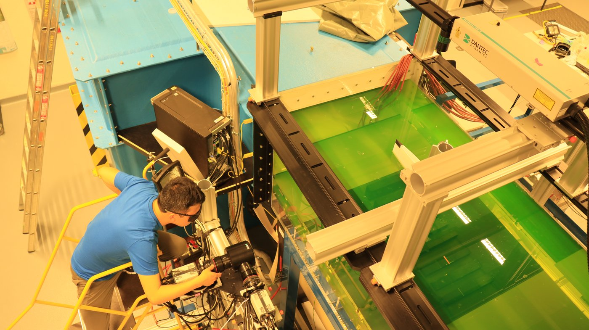
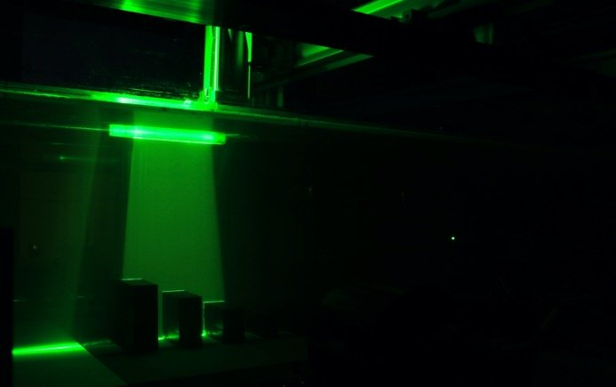
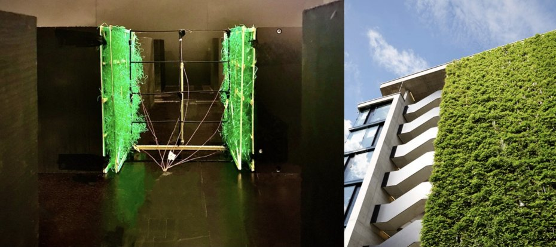
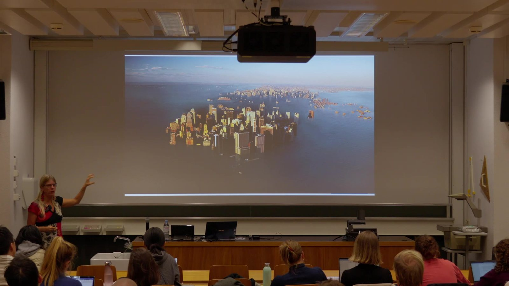
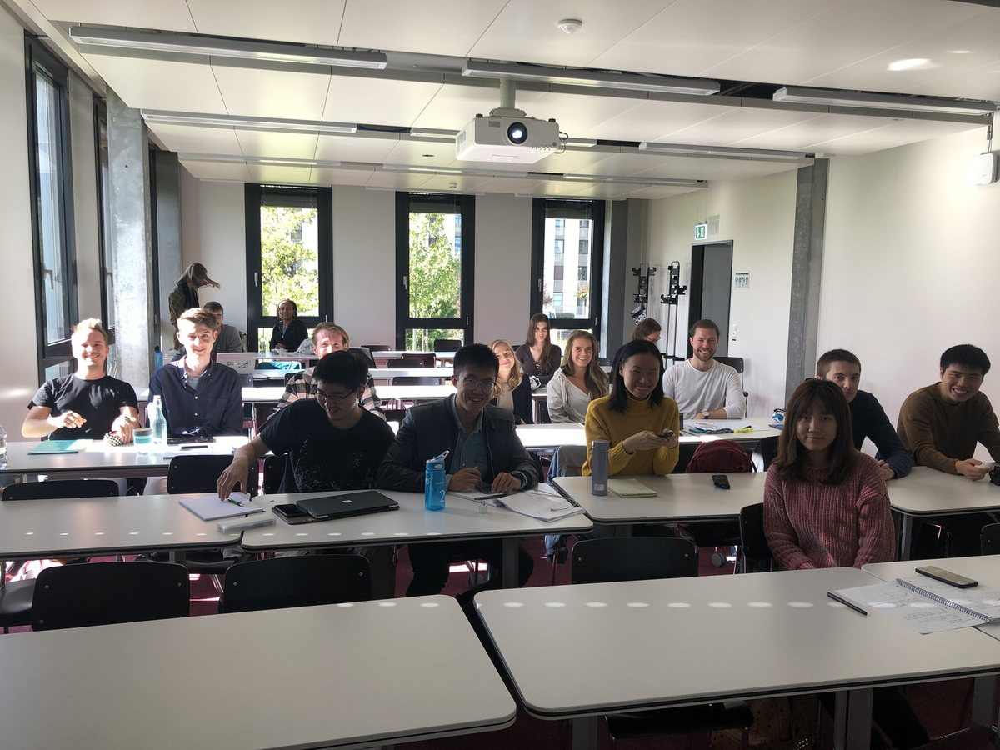
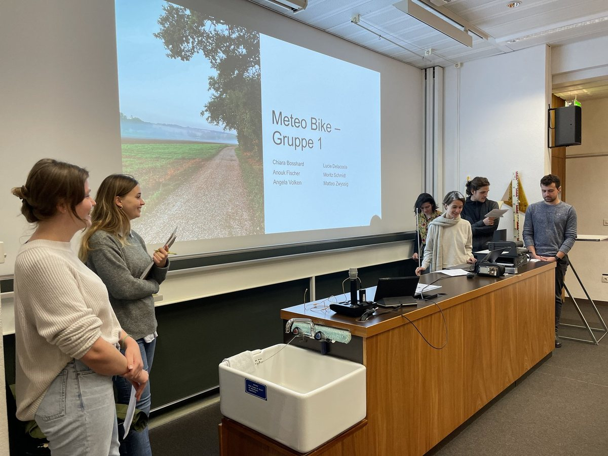
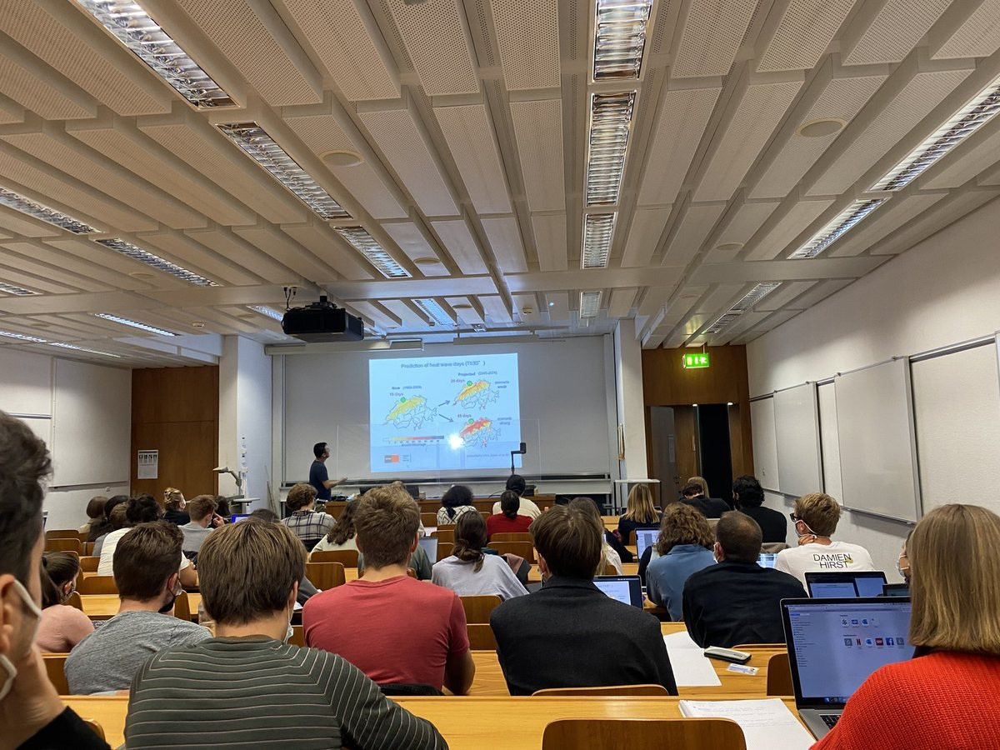

About
I am a Group Leader and Lecturer at the Chair of Building Physics, Department of Mechanical and Process Engineering, ETH Zürich, where I lead research on urban climate. My work develops along two fronts: understanding the physics of urban overheating, and developing cooling solutions that can be accelerated at scale.
On the first front, I combine fluid-tunnel experiments, multiscale simulation from street canyons to whole urban regions, and machine learning to reveal how heat builds up, moves, and dissipates in cities — from buoyant flows in a single street to overheating patterns across thousands of cities worldwide.
On the second, I have established an emerging line of research on nature-inspired urban climate solutions, and work on prioritizing nature-based strategies and technological innovations so that urban heat mitigation can move faster.
Both fronts rest on a common foundation in fluid mechanics, with training that began with my PhD at the University of Sydney. Beyond ETH, I have been a visiting fellow at the University of Cambridge and, as an IPCC-invited expert, co-drafted the outline of the Special Report on Climate Change and Cities. Reflecting my interest in teaching in a broad context, I also lead the ABB–ETH Academy, a multi-year education initiative with ABB Group.
Research
Six studies that anchor my research — from accelerating urban heat mitigation to the fundamental physics of buoyant flows.
Urban heat mitigation pathways
Prioritizing nature-based solutions and technological innovations to accelerate urban heat mitigation — a roadmap for how cities can cool faster in a warming world.
Global cooling potential of cities
How much cooling can the world's cities actually achieve? A global assessment reveals deep asymmetries between heat burden and cooling potential — demanding accelerated, context-specific action.
Beating urban heat
Multimeasure-centric solution sets and a complementary framework for decision-making — connecting individual cooling measures into coherent strategies for real cities.
Intra-city warming in heatwaves
Clustering reveals that heatwaves do not warm a city evenly — neighbourhoods heat differently, with insights drawn from Paris, Montreal, and Zurich.
Urban warming & cooling demand
Three decades of surging space-cooling demand, traced back to urban warming — quantifying how hotter cities lock in ever-growing energy use.
Transition of thermal boundary layers
How natural convection boundary layers transition to turbulence — the K-type and H-type routes, revealed through controlled perturbations.

→ Phil. Trans. R. Soc. A · 2025 ↗
→ Building and Environment · 2022 ↗
→ Environmental Research Letters · 2024 ↗

→ Int. J. Heat and Mass Transfer · 2026 ↗

→ Building and Environment · 2022 ↗
→ J. Adv. Modeling Earth Systems · 2025 ↗
Selected publications
64 peer-reviewed journal articles across urban physics and heat transfer. A selection below — full list on Google Scholar ↗
Teaching & supervision

Prof. Diana Ürge-Vorsatz on cities in a changing climate
A highlight of the Urban Physics course: an invited guest lecture by Prof. Diana Ürge-Vorsatz (Central European University), Vice-Chair of the IPCC and one of the world's leading voices on climate change mitigation and cities. Her lecture explores how cities both drive and suffer from a changing climate — and what accelerated mitigation could look like.
▶ Watch the lecture recording


Urban Physics — Lead Lecturer
The state of the art in urban climate research: urban heat islands, urban wind, vegetation, thermal comfort, and climate mitigation strategies. Each semester combines lectures with hands-on workshops, laboratory tests, field measurements, and invited guest speakers.
PhD & Master's supervision
I supervise PhD and Master's projects on topics such as:
- Machine learning for urban climate and heat mitigation
- Aerodynamic and thermal effects of urban vegetation
I also share PIV learning resources — code, particle images, lecture notes, and video demonstrations.
Get in touch
Questions about my research are welcome. I am happy to share the data and code behind published work, and I take part in international collaborations on urban climate.
Dept. of Mechanical and Process Engineering, ETH Zürich